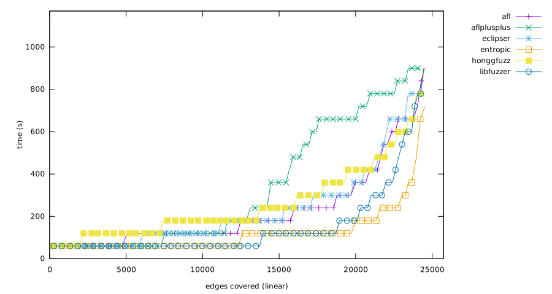
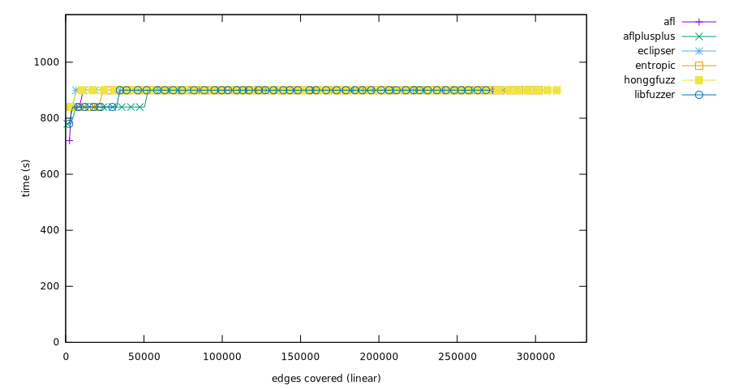

Experiment result
Critical difference
Micro-benchmark Critical difference
| Fuzzer | Rank |
|---|
| aflplusplus | 2.91 |
| honggfuzz | 3.22 |
| entropic | 3.47 |
| afl | 3.60 |
| eclipser | 3.75 |
| libfuzzer | 3.96 |
Overall (ranking by edges covered)
- honggfuzz (2,300,730 edges covered), success rate: 4.55%(91/2000 pairs)
- aflplusplus (2,247,476 edges covered), success rate: 3.60%(72/2000 pairs)
- eclipser (2,156,768 edges covered), success rate: 4.30%(86/2000 pairs)
- afl (2,151,651 edges covered), success rate: 4.70%(94/2000 pairs)
- entropic (2,126,586 edges covered), success rate: 4.70%(94/2000 pairs)
- libfuzzer (2,012,231 edges covered), success rate: 4.25%(85/2000 pairs)
bloaty_fuzz_target
Ranking
- honggfuzz, (63,025 edges covered), success rate: 0.00%(0/100 pairs)
- eclipser, (61,521 edges covered), success rate: 0.00%(0/100 pairs)
- entropic, (59,047 edges covered), success rate: 0.00%(0/100 pairs)
- afl, (57,593 edges covered), success rate: 0.00%(0/100 pairs)
- libfuzzer, (51,772 edges covered), success rate: 0.00%(0/100 pairs)
- aflplusplus, (37,663 edges covered), success rate: 0.00%(0/100 pairs)
Mann-Whitney U test
curl_curl_fuzzer_http
Ranking
- aflplusplus, (211,103 edges covered), success rate: 0.00%(0/100 pairs)
- afl, (183,579 edges covered), success rate: 0.00%(0/100 pairs)
- eclipser, (181,868 edges covered), success rate: 0.00%(0/100 pairs)
- honggfuzz, (179,324 edges covered), success rate: 0.00%(0/100 pairs)
- entropic, (174,106 edges covered), success rate: 0.00%(0/100 pairs)
- libfuzzer, (164,712 edges covered), success rate: 0.00%(0/100 pairs)
Mann-Whitney U test
freetype2-2017
Ranking
- honggfuzz, (216,772 edges covered), success rate: 0.00%(0/100 pairs)
- aflplusplus, (176,883 edges covered), success rate: 0.00%(0/100 pairs)
- eclipser, (171,769 edges covered), success rate: 0.00%(0/100 pairs)
- afl, (139,493 edges covered), success rate: 0.00%(0/100 pairs)
- entropic, (136,437 edges covered), success rate: 0.00%(0/100 pairs)
- libfuzzer, (130,625 edges covered), success rate: 0.00%(0/100 pairs)

Mann-Whitney U test
harfbuzz-1.3.2
Ranking
- aflplusplus, (183,797 edges covered), success rate: 0.00%(0/100 pairs)
- honggfuzz, (180,267 edges covered), success rate: 0.00%(0/100 pairs)
- afl, (173,133 edges covered), success rate: 0.00%(0/100 pairs)
- eclipser, (172,355 edges covered), success rate: 0.00%(0/100 pairs)
- entropic, (152,055 edges covered), success rate: 0.00%(0/100 pairs)
- libfuzzer, (151,061 edges covered), success rate: 0.00%(0/100 pairs)

Mann-Whitney U test
jsoncpp_jsoncpp_fuzzer
Ranking
- entropic, (24,521 edges covered), success rate: 94.00%(94/100 pairs)
- afl, (24,506 edges covered), success rate: 88.00%(88/100 pairs)
- honggfuzz, (24,505 edges covered), success rate: 91.00%(91/100 pairs)
- eclipser, (24,501 edges covered), success rate: 83.00%(83/100 pairs)
- libfuzzer, (24,452 edges covered), success rate: 84.00%(84/100 pairs)
- aflplusplus, (24,231 edges covered), success rate: 67.00%(67/100 pairs)

Mann-Whitney U test
lcms-2017-03-21
Ranking
- aflplusplus, (34,734 edges covered), success rate: 0.00%(0/100 pairs)
- honggfuzz, (33,883 edges covered), success rate: 0.00%(0/100 pairs)
- afl, (31,522 edges covered), success rate: 0.00%(0/100 pairs)
- entropic, (31,386 edges covered), success rate: 0.00%(0/100 pairs)
- eclipser, (29,144 edges covered), success rate: 0.00%(0/100 pairs)
- libfuzzer, (25,103 edges covered), success rate: 0.00%(0/100 pairs)
Mann-Whitney U test
libjpeg-turbo-07-2017
Ranking
- aflplusplus, (62,675 edges covered), success rate: 1.00%(1/100 pairs)
- afl, (51,986 edges covered), success rate: 0.00%(0/100 pairs)
- eclipser, (51,304 edges covered), success rate: 0.00%(0/100 pairs)
- entropic, (41,953 edges covered), success rate: 0.00%(0/100 pairs)
- honggfuzz, (39,830 edges covered), success rate: 0.00%(0/100 pairs)
- libfuzzer, (33,053 edges covered), success rate: 0.00%(0/100 pairs)
Mann-Whitney U test

libpcap_fuzz_both
Ranking
- aflplusplus, (75,083 edges covered), success rate: 0.00%(0/100 pairs)
- honggfuzz, (66,101 edges covered), success rate: 0.00%(0/100 pairs)
- entropic, (63,779 edges covered), success rate: 0.00%(0/100 pairs)
- afl, (61,924 edges covered), success rate: 0.00%(0/100 pairs)
- libfuzzer, (61,889 edges covered), success rate: 0.00%(0/100 pairs)
- eclipser, (61,333 edges covered), success rate: 0.00%(0/100 pairs)
Mann-Whitney U test
libpng-1.2.56
Ranking
- aflplusplus, (33,400 edges covered), success rate: 0.00%(0/100 pairs)
- honggfuzz, (30,066 edges covered), success rate: 0.00%(0/100 pairs)
- entropic, (29,839 edges covered), success rate: 0.00%(0/100 pairs)
- eclipser, (28,217 edges covered), success rate: 0.00%(0/100 pairs)
- libfuzzer, (28,021 edges covered), success rate: 0.00%(0/100 pairs)
- afl, (27,929 edges covered), success rate: 0.00%(0/100 pairs)
Mann-Whitney U test
libxml2-v2.9.2
Ranking
- honggfuzz, (287,772 edges covered), success rate: 0.00%(0/100 pairs)
- afl, (265,931 edges covered), success rate: 0.00%(0/100 pairs)
- aflplusplus, (259,214 edges covered), success rate: 0.00%(0/100 pairs)
- eclipser, (255,231 edges covered), success rate: 0.00%(0/100 pairs)
- entropic, (235,747 edges covered), success rate: 0.00%(0/100 pairs)
- libfuzzer, (217,872 edges covered), success rate: 0.00%(0/100 pairs)
Mann-Whitney U test
libxslt_xpath
Ranking
- aflplusplus, (197,091 edges covered), success rate: 0.00%(0/100 pairs)
- afl, (182,721 edges covered), success rate: 0.00%(0/100 pairs)
- entropic, (181,364 edges covered), success rate: 0.00%(0/100 pairs)
- eclipser, (180,752 edges covered), success rate: 0.00%(0/100 pairs)
- honggfuzz, (178,423 edges covered), success rate: 0.00%(0/100 pairs)
- libfuzzer, (177,965 edges covered), success rate: 0.00%(0/100 pairs)
Mann-Whitney U test
mbedtls_fuzz_dtlsclient
Ranking
- aflplusplus, (24,544 edges covered), success rate: 0.00%(0/100 pairs)
- honggfuzz, (23,695 edges covered), success rate: 0.00%(0/100 pairs)
- entropic, (21,977 edges covered), success rate: 0.00%(0/100 pairs)
- afl, (20,360 edges covered), success rate: 0.00%(0/100 pairs)
- eclipser, (19,880 edges covered), success rate: 0.00%(0/100 pairs)
- libfuzzer, (17,771 edges covered), success rate: 0.00%(0/100 pairs)
Mann-Whitney U test
openssl_x509
Ranking
- entropic, (45,425 edges covered), success rate: 0.00%(0/100 pairs)
- libfuzzer, (44,240 edges covered), success rate: 0.00%(0/100 pairs)
- aflplusplus, (43,479 edges covered), success rate: 0.00%(0/100 pairs)
- afl, (41,063 edges covered), success rate: 0.00%(0/100 pairs)
- eclipser, (38,650 edges covered), success rate: 0.00%(0/100 pairs)
- honggfuzz, (36,332 edges covered), success rate: 0.00%(0/100 pairs)
Mann-Whitney U test
openthread-2019-12-23
Ranking
- libfuzzer, (43,677 edges covered), success rate: 0.00%(0/100 pairs)
- entropic, (43,415 edges covered), success rate: 0.00%(0/100 pairs)
- aflplusplus, (43,134 edges covered), success rate: 0.00%(0/100 pairs)
- afl, (37,775 edges covered), success rate: 0.00%(0/100 pairs)
- eclipser, (37,220 edges covered), success rate: 0.00%(0/100 pairs)
- honggfuzz, (36,356 edges covered), success rate: 0.00%(0/100 pairs)
Mann-Whitney U test
php_php-fuzz-parser
Ranking
- honggfuzz, (316,776 edges covered), success rate: 0.00%(0/100 pairs)
- entropic, (305,118 edges covered), success rate: 0.00%(0/100 pairs)
- aflplusplus, (283,196 edges covered), success rate: 0.00%(0/100 pairs)
- afl, (281,348 edges covered), success rate: 0.00%(0/100 pairs)
- eclipser, (273,572 edges covered), success rate: 0.00%(0/100 pairs)
- libfuzzer, (271,778 edges covered), success rate: 0.00%(0/100 pairs)

Mann-Whitney U test
proj4-2017-08-14
Ranking
- entropic, (102,622 edges covered), success rate: 0.00%(0/100 pairs)
- honggfuzz, (101,215 edges covered), success rate: 0.00%(0/100 pairs)
- libfuzzer, (100,932 edges covered), success rate: 0.00%(0/100 pairs)
- aflplusplus, (88,295 edges covered), success rate: 0.00%(0/100 pairs)
- afl, (82,373 edges covered), success rate: 0.00%(0/100 pairs)
- eclipser, (82,338 edges covered), success rate: 0.00%(0/100 pairs)
Mann-Whitney U test
re2-2014-12-09
Ranking
- libfuzzer, (139,665 edges covered), success rate: 1.00%(1/100 pairs)
- aflplusplus, (139,503 edges covered), success rate: 4.00%(4/100 pairs)
- afl, (139,239 edges covered), success rate: 6.00%(6/100 pairs)
- eclipser, (139,239 edges covered), success rate: 3.00%(3/100 pairs)
- honggfuzz, (138,693 edges covered), success rate: 0.00%(0/100 pairs)
- entropic, (136,583 edges covered), success rate: 0.00%(0/100 pairs)
Mann-Whitney U test
sqlite3_ossfuzz
Ranking
- afl, (328,687 edges covered), success rate: 0.00%(0/100 pairs)
- eclipser, (327,642 edges covered), success rate: 0.00%(0/100 pairs)
- honggfuzz, (325,739 edges covered), success rate: 0.00%(0/100 pairs)
- entropic, (320,640 edges covered), success rate: 0.00%(0/100 pairs)
- libfuzzer, (309,102 edges covered), success rate: 0.00%(0/100 pairs)
- aflplusplus, (303,806 edges covered), success rate: 0.00%(0/100 pairs)
Mann-Whitney U test
systemd_fuzz-link-parser
Ranking
- honggfuzz, (4,931 edges covered), success rate: 0.00%(0/100 pairs)
- entropic, (4,624 edges covered), success rate: 0.00%(0/100 pairs)
- eclipser, (4,430 edges covered), success rate: 0.00%(0/100 pairs)
- libfuzzer, (4,429 edges covered), success rate: 0.00%(0/100 pairs)
- afl, (4,191 edges covered), success rate: 0.00%(0/100 pairs)
- aflplusplus, (4,145 edges covered), success rate: 0.00%(0/100 pairs)

Mann-Whitney U test
vorbis-2017-12-11
Ranking
- aflplusplus, (21,500 edges covered), success rate: 0.00%(0/100 pairs)
- honggfuzz, (17,025 edges covered), success rate: 0.00%(0/100 pairs)
- afl, (16,298 edges covered), success rate: 0.00%(0/100 pairs)
- entropic, (15,948 edges covered), success rate: 0.00%(0/100 pairs)
- eclipser, (15,802 edges covered), success rate: 0.00%(0/100 pairs)
- libfuzzer, (14,112 edges covered), success rate: 0.00%(0/100 pairs)
Mann-Whitney U test